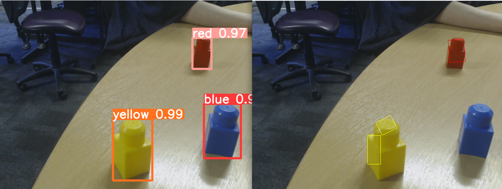
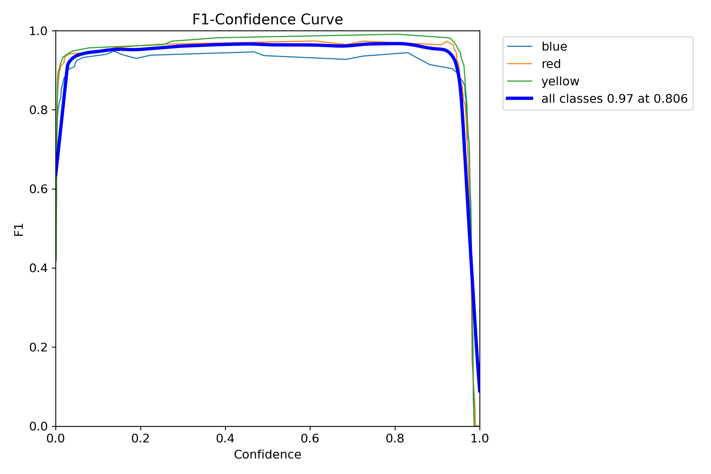
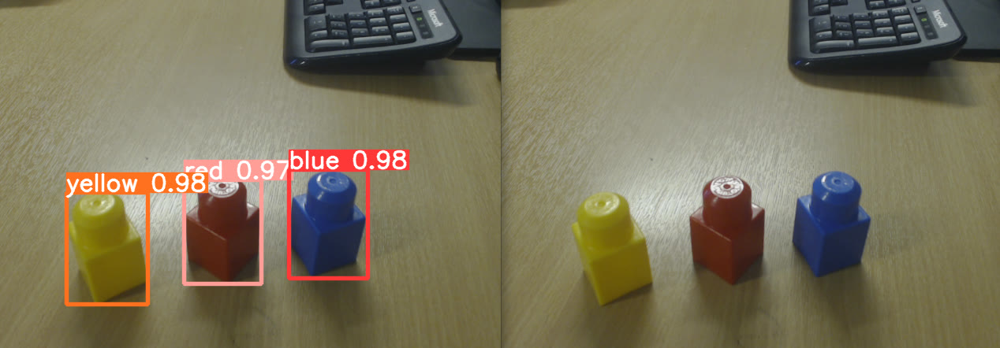
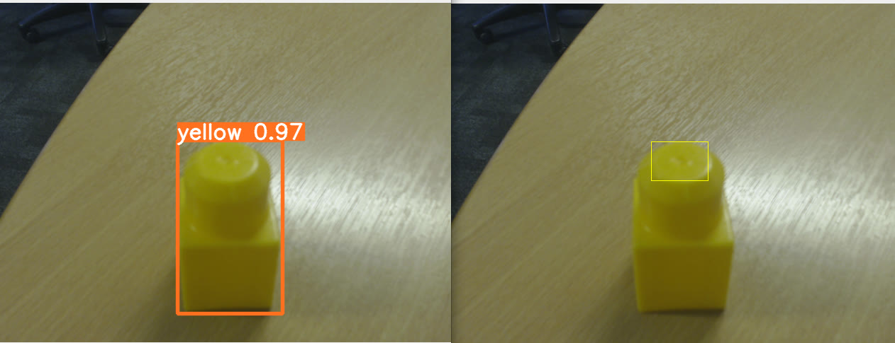

Autonomous Pick-and-Place with Custom YOLOv5 Detection in ROS
May 2023 · ROS, YOLOv5, object detection

Task
The robot is a small OpenMANIPULATOR arm with a USB camera, controlled through ROS Noetic. Its task is to find red, yellow and blue blocks placed anywhere in its workspace and stack them at a docking position, without being told where the blocks are. This was a team project at Loughborough University, and it was graded best in the cohort, with a mark of 95%.
Search and grasp sequence
The robot first checks that the stacking area is clear, and moves the stacking position if it is not. It then sweeps its workspace, with a close sweep for blocks near its base and a far sweep for blocks out to the edge of the workspace. The default sweep covers 45 degrees to each side and can be widened to 180 degrees.
The grasp depends on where a block is found. For a block close to the base the arm lowers towards it and keeps it centred until the block fills enough of the image, then grabs it or pushes it further away. For a far block the arm aims along its x axis, switches to a horizontal pose and extends in small steps until the block's colour disappears from view, which means the block is between the fingers. Small left and right movements correct the block's orientation before the gripper closes. The camera then checks whether the block is held, and the arm brings it to the stack and lowers it slowly to the right height. The sequence repeats until every block is stacked.
Block detection
Detection runs as a ROS node using a YOLOv5 interface for ROS. The first detector was trained on about 350 images for 100 epochs and scored 99.7% precision, 100% recall and 99.5% mAP on its test set, but on the robot it raised false positives on background objects. The final detector was trained on the full dataset of about 1,100 images for 300 epochs. The dataset started from about 450 unique images of the blocks in different orientations and situations, labelled in Roboflow with three augmentations of hue, brightness and rotation per image, and it included empty images of the robot room so that the model learned what is not a block. Its test scores were slightly lower, at 98.5% precision, 95.1% recall and 98.2% mAP, but it behaved much better on the robot.

Comparison with a colour-threshold script
The detector was compared on the robot's own camera against a basic machine vision script that finds blocks by colour. In these views the script either missed the blocks entirely or boxed only part of a block, while the detector found every block with a single box and high confidence.

